开头 入口方法在BeanDefinitionParserDelegate.parseCustomElement：
1 return handler.parse(ele, new ParserContext(this .readerContext, this , containingBd));
parse方法由各种NamespaceHandler的父类NamespaceHandlerSupport实现:
1 2 3 4 @Override public BeanDefinition parse (Element element, ParserContext parserContext) return findParserForElement(element, parserContext).parse(element, parserContext); }
findParserForElement方法用以寻找适用于此元素的BeanDefinitionParser对象:
1 2 3 4 5 6 7 8 9 private BeanDefinitionParser findParserForElement (Element element, ParserContext parserContext) String localName = parserContext.getDelegate().getLocalName(element); BeanDefinitionParser parser = this .parsers.get(localName); if (parser == null ) { parserContext.getReaderContext().fatal( "Cannot locate BeanDefinitionParser for element [" + localName + "]" , element); } return parser; }
localName是个什么东西呢，比如对于context:annotation-config标签就是annotation-config。
annotation-config AnnotationConfigBeanDefinitionParser.parse:
1 2 3 4 5 6 7 8 9 10 11 12 13 14 15 16 17 18 19 20 21 @Override public BeanDefinition parse (Element element, ParserContext parserContext) Object source = parserContext.extractSource(element); Set<BeanDefinitionHolder> processorDefinitions = AnnotationConfigUtils. registerAnnotationConfigProcessors(parserContext.getRegistry(), source); CompositeComponentDefinition compDefinition = new CompositeComponentDefinition(element.getTagName(), source); parserContext.pushContainingComponent(compDefinition); for (BeanDefinitionHolder processorDefinition : processorDefinitions) { parserContext.registerComponent(new BeanComponentDefinition(processorDefinition)); } parserContext.popAndRegisterContainingComponent(); return null ; }
BeanPostProcessor注册 AnnotationConfigUtils.registerAnnotationConfigProcessors源码:
1 2 3 4 5 6 7 8 9 10 11 12 13 14 15 16 17 18 19 20 21 22 23 24 25 26 27 28 29 30 31 32 33 34 35 36 37 38 39 40 41 42 43 44 45 46 47 48 49 50 51 52 53 54 55 56 57 58 59 60 61 62 63 64 public static Set<BeanDefinitionHolder> registerAnnotationConfigProcessors ( BeanDefinitionRegistry registry, Object source) DefaultListableBeanFactory beanFactory = unwrapDefaultListableBeanFactory(registry); if (beanFactory != null ) { if (!(beanFactory.getDependencyComparator() instanceof AnnotationAwareOrderComparator)) { beanFactory.setDependencyComparator(AnnotationAwareOrderComparator.INSTANCE); } if (!(beanFactory.getAutowireCandidateResolver() instanceof ContextAnnotationAutowireCandidateResolver)) { beanFactory.setAutowireCandidateResolver(new ContextAnnotationAutowireCandidateResolver()); } } Set<BeanDefinitionHolder> beanDefs = new LinkedHashSet<BeanDefinitionHolder>(4 ); if (!registry.containsBeanDefinition(CONFIGURATION_ANNOTATION_PROCESSOR_BEAN_NAME)) { RootBeanDefinition def = new RootBeanDefinition(ConfigurationClassPostProcessor.class); def.setSource(source); beanDefs.add(registerPostProcessor(registry, def,CONFIGURATION_ANNOTATION_PROCESSOR_BEAN_NAME)); } if (!registry.containsBeanDefinition(AUTOWIRED_ANNOTATION_PROCESSOR_BEAN_NAME)) { RootBeanDefinition def = new RootBeanDefinition(AutowiredAnnotationBeanPostProcessor.class); def.setSource(source); beanDefs.add(registerPostProcessor(registry, def, AUTOWIRED_ANNOTATION_PROCESSOR_BEAN_NAME)); } if (!registry.containsBeanDefinition(REQUIRED_ANNOTATION_PROCESSOR_BEAN_NAME)) { RootBeanDefinition def = new RootBeanDefinition(RequiredAnnotationBeanPostProcessor.class); def.setSource(source); beanDefs.add(registerPostProcessor(registry, def, REQUIRED_ANNOTATION_PROCESSOR_BEAN_NAME)); } if (jsr250Present && !registry.containsBeanDefinition(COMMON_ANNOTATION_PROCESSOR_BEAN_NAME)) { RootBeanDefinition def = new RootBeanDefinition(CommonAnnotationBeanPostProcessor.class); def.setSource(source); beanDefs.add(registerPostProcessor(registry, def, COMMON_ANNOTATION_PROCESSOR_BEAN_NAME)); } if (jpaPresent && !registry.containsBeanDefinition(PERSISTENCE_ANNOTATION_PROCESSOR_BEAN_NAME)) { RootBeanDefinition def = new RootBeanDefinition(); def.setBeanClass(ClassUtils.forName(PERSISTENCE_ANNOTATION_PROCESSOR_CLASS_NAME, AnnotationConfigUtils.class.getClassLoader())); def.setSource(source); beanDefs.add(registerPostProcessor(registry, def, PERSISTENCE_ANNOTATION_PROCESSOR_BEAN_NAME)); } if (!registry.containsBeanDefinition(EVENT_LISTENER_PROCESSOR_BEAN_NAME)) { RootBeanDefinition def = new RootBeanDefinition(EventListenerMethodProcessor.class); def.setSource(source); beanDefs.add(registerPostProcessor(registry, def, EVENT_LISTENER_PROCESSOR_BEAN_NAME)); } if (!registry.containsBeanDefinition(EVENT_LISTENER_FACTORY_BEAN_NAME)) { RootBeanDefinition def = new RootBeanDefinition(DefaultEventListenerFactory.class); def.setSource(source); beanDefs.add(registerPostProcessor(registry, def, EVENT_LISTENER_FACTORY_BEAN_NAME)); } return beanDefs; }
AnnotationAwareOrderComparator 其继承体系如下:
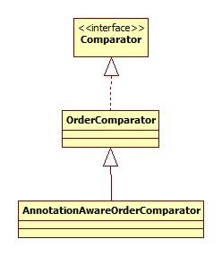
其作用是比较标注了@Order或是javax.annotation.Priority @Priority注解的元素的优先级。这两种注解的一个常用功能就是设置配置加载的优先级。例子可以参考:
Spring 4.2新特性-使用@Order调整配置类加载顺序
ContextAnnotationAutowireCandidateResolver 此类用以决定一个bean是否可以当作一个依赖的候选者。其类图:
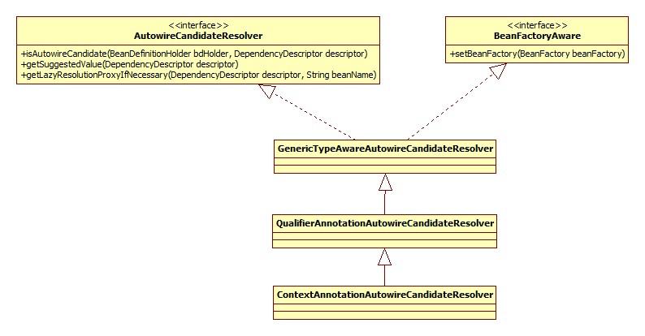
ConfigurationClassPostProcessor 此类用于处理标注了@Configuration注解的类。类图:
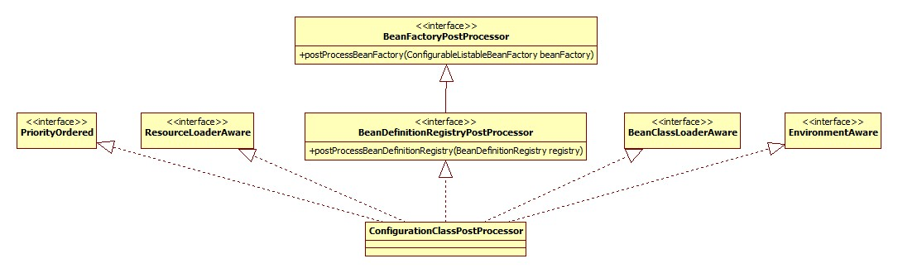
AutowiredAnnotationBeanPostProcessor 此类便用于对标注了@Autowire等注解的bean或是方法进行注入。
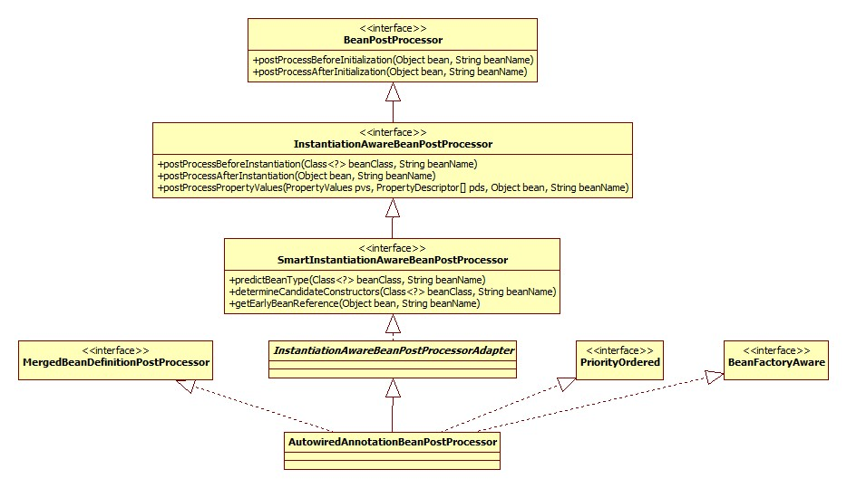
RequiredAnnotationBeanPostProcessor 对应Spring @Require注解，此注解被用在setter方法上，意味着此setter方法对应的属性必须被Spring所注入，但是不会检查是否是null。其继承体系和上面的AutowiredAnnotationBeanPostProcessor完全一样。
CommonAnnotationBeanPostProcessor 用于开启对JSR-250的支持，开启的先决条件是当前classpath中有其类，检测的源码:
1 2 private static final boolean jsr250Present = ClassUtils.isPresent("javax.annotation.Resource" , AnnotationConfigUtils.class.getClassLoader());
此注解就在rt.jar下，所以默认情况下都是开启JSR-250支持的，所以我们就可以使用喜闻乐见的@Resource注解了。其类图:
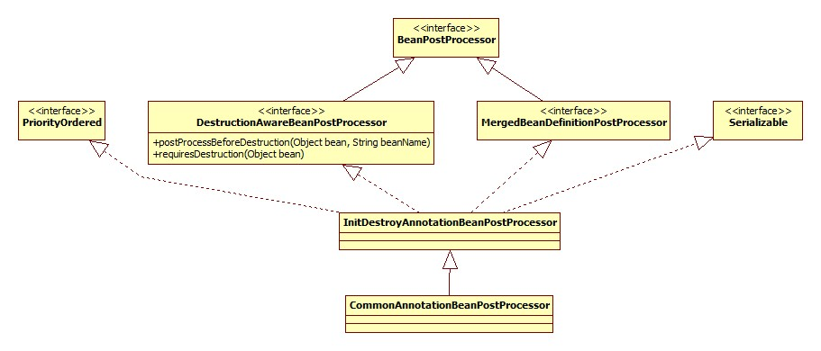
PersistenceAnnotationBeanPostProcessor 用于提供JPA支持，开启的先决条件仍然是检测classpath下是否有其类存在，源码:
1 2 3 4 5 6 private static final boolean jpaPresent = ClassUtils.isPresent("javax.persistence.EntityManagerFactory" , AnnotationConfigUtils.class.getClassLoader()) && ClassUtils.isPresent(PERSISTENCE_ANNOTATION_PROCESSOR_CLASS_NAME, AnnotationConfigUtils.class.getClassLoader());
rt.jar下面并没有JPA的包，所以此Processor默认是没有被注册的。其类图和上面CommonAnnotationBeanPostProcessor如出一辙。
EventListenerMethodProcessor 提供对于注解@EventListener的支持，此注解在Spring4.2被添加，用于监听ApplicationEvent事件。其继承体系:
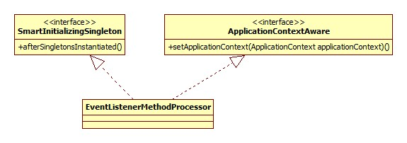
DefaultEventListenerFactory 此类应该是和上面的配合使用，用以产生EventListener对象，也是从Spring4.2加入，类图:
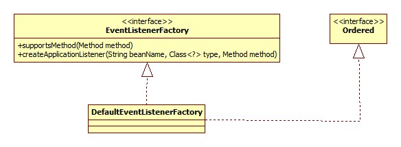
逻辑关系整理 普通的bean元素(XML)其实都有一个BeanDefinition对象与之对应，但是对于context开头的这种的特殊的元素，它所对应的一般不再是普通意义上的BeanDefinition，而是配合起来一起完成某种功能的组件(比如各种BeanPostProcessor)。这种组件Spring抽象成为ComponentDefinition接口，组件的集合表示成为CompositeComponentDefinition，类图:
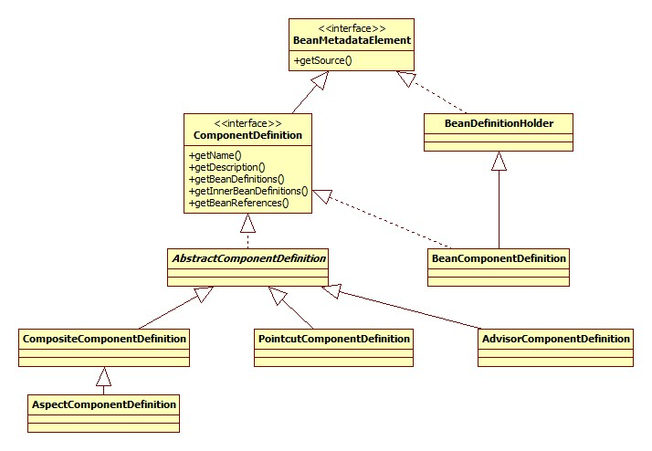
最终形成的数据结构如下图:
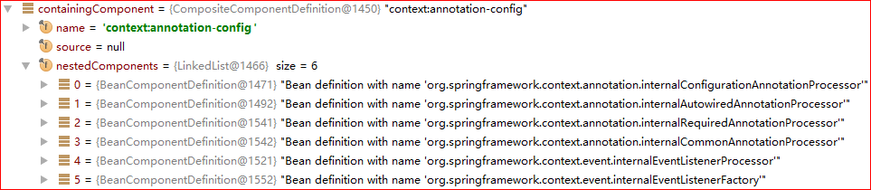
不过这个数据结构貌似也没什么用，因为调用的是XmlBeanDefinitionReader中的eventListener的componentRegistered方法，然而这里的eventListener是EmptyReaderEventListener，也就是空实现。
运行 ConfigurationClassPostProcessor 本身是一个BeanFactoryPostProcessor对象，其执行入口在AbstractApplicationContext.refresh方法:
1 invokeBeanFactoryPostProcessors(beanFactory);
注意，因为ConfigurationClassPostProcessor实现自BeanDefinitionRegistryPostProcessor接口，所以在此处会首先调用其postProcessBeanDefinitionRegistry方法，再调用其postProcessBeanFactory方法。
postProcessBeanDefinitionRegistry 此方法大体由两部分组成。
BeanPostProcessor注册 此部分源码:
1 2 3 4 5 6 7 8 9 @Override public void postProcessBeanDefinitionRegistry (BeanDefinitionRegistry registry) RootBeanDefinition iabpp = new RootBeanDefinition(ImportAwareBeanPostProcessor.class); iabpp.setRole(BeanDefinition.ROLE_INFRASTRUCTURE); registry.registerBeanDefinition(IMPORT_AWARE_PROCESSOR_BEAN_NAME, iabpp); RootBeanDefinition ecbpp = new RootBeanDefinition(EnhancedConfigurationBeanPostProcessor.class); ecbpp.setRole(BeanDefinition.ROLE_INFRASTRUCTURE); registry.registerBeanDefinition(ENHANCED_CONFIGURATION_PROCESSOR_BEAN_NAME, ecbpp); }
ImportAwareBeanPostProcessor 是ConfigurationClassPostProcessor的私有内部类。其类图:
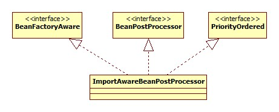
此类用于处理实现了ImportAware接口的类。ImportAware接口是做什么的要从使用java源文件作为Spring配置说起:
有一个类负责生成Student bean:
1 2 3 4 5 6 7 8 9 10 11 12 13 14 @Configuration public class StudentConfig implements ImportAware @Bean public Student student () Student student = new Student(); student.setAge(22 ); student.setName("skywalker" ); return student; } @Override public void setImportMetadata (AnnotationMetadata importMetadata) System.out.println("importaware" ); } }
生成的bean就以所在的方法名命名。还有一个类负责生成SimpleBean:
1 2 3 4 5 6 7 8 9 10 11 12 @Configuration @Import (StudentConfig.class)public class SimpleBeanConfig @Autowired private StudentConfig studentConfig; @Bean public SimpleBean getSimpleBean () SimpleBean simpleBean = new SimpleBean(studentConfig.student()); return simpleBean; } }
启动代码:
1 2 3 4 5 6 public static void main (String[] args) AnnotationConfigApplicationContext context = new AnnotationConfigApplicationContext(SimpleBeanConfig.class); SimpleBean simpleBean = context.getBean(SimpleBean.class); System.out.println(simpleBean.getStudent().getName()); }
所以ImportAware接口的作用就是使被引用的配置类可以获得引用类的相关信息 。
EnhancedConfigurationBeanPostProcessor 用于为实现了EnhancedConfiguration接口的类设置BeanFactory对象，所有的@Configuration Cglib子类均实现了此接口，为什么要这么做不太明白。
类解析 这里便是对标注了@Configuration注解的类及进行解析，通过调用ConfigurationClassPostProcessor的processConfigBeanDefinitions方法来实现，具体怎么解析就不详细说明了。
bean名字生成策略 对于配置类，Spring也会将其当作一个bean放到容器中，这就关系到bean的起名了，其实这部分对于@Component, @Controller等注解都是一样的。
ConfigurationClassPostProcessor.processConfigBeanDefinitions相关代码:
1 2 3 4 5 6 7 8 9 10 11 12 13 SingletonBeanRegistry singletonRegistry = null ; if (registry instanceof SingletonBeanRegistry) { singletonRegistry = (SingletonBeanRegistry) registry; if (!this .localBeanNameGeneratorSet && singletonRegistry.containsSingleton(CONFIGURATION_BEAN_NAME_GENERATOR)) { BeanNameGenerator generator = (BeanNameGenerator) singletonRegistry. getSingleton(CONFIGURATION_BEAN_NAME_GENERATOR); this .componentScanBeanNameGenerator = generator; this .importBeanNameGenerator = generator; } }
默认是一个AnnotationBeanNameGenerator对象，其类图:
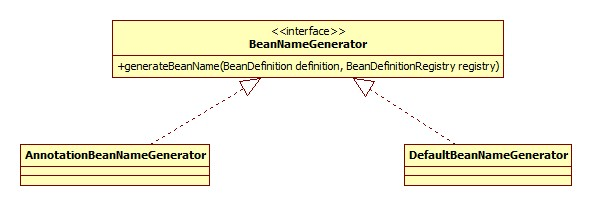
那我们可以通过向Spring容器添加一个自定义BeanNameGenerator对象的方式自定义beanName生成策略吗，答案是不可以，这也是为什么此bean的ID前面以internal开头。从代码上来看，不可以的原因在于BeanFactoryPostProcessor的触发时机: 配置解析、BeanDefinition加载之后，Singleton初始化之前 ，所以即使配置了此接口的实现，但是此时此bean尚未初始化，所以根本看不到此实例。
postProcessBeanFactory 此方法调用了enhanceConfigurationClasses，其实就是将@Configuration的beanClass转换为CGLIB代理子类。简略版的源码:
1 2 3 4 5 6 7 8 9 10 11 12 13 14 15 16 17 18 19 20 21 22 23 24 25 26 27 28 public void enhanceConfigurationClasses (ConfigurableListableBeanFactory beanFactory) Map<String, AbstractBeanDefinition> configBeanDefs = new LinkedHashMap<String, AbstractBeanDefinition>(); for (String beanName : beanFactory.getBeanDefinitionNames()) { BeanDefinition beanDef = beanFactory.getBeanDefinition(beanName); if (ConfigurationClassUtils.isFullConfigurationClass(beanDef)) { configBeanDefs.put(beanName, (AbstractBeanDefinition) beanDef); } } if (configBeanDefs.isEmpty()) { return ; } ConfigurationClassEnhancer enhancer = new ConfigurationClassEnhancer(); for (Map.Entry<String, AbstractBeanDefinition> entry : configBeanDefs.entrySet()) { AbstractBeanDefinition beanDef = entry.getValue(); beanDef.setAttribute(AutoProxyUtils.PRESERVE_TARGET_CLASS_ATTRIBUTE, Boolean.TRUE); Class<?> configClass = beanDef.resolveBeanClass(this .beanClassLoader); Class<?> enhancedClass = enhancer.enhance(configClass, this .beanClassLoader); if (configClass != enhancedClass) { beanDef.setBeanClass(enhancedClass); } } }
ConfigurationClassEnhancer.newEnhancer:
1 2 3 4 5 6 7 8 9 10 11 12 13 private Enhancer newEnhancer (Class<?> superclass, ClassLoader classLoader) Enhancer enhancer = new Enhancer(); enhancer.setSuperclass(superclass); enhancer.setInterfaces(new Class<?>[] {EnhancedConfiguration.class}); enhancer.setUseFactory(false ); enhancer.setNamingPolicy(SpringNamingPolicy.INSTANCE); enhancer.setStrategy(new BeanFactoryAwareGeneratorStrategy(classLoader)); enhancer.setCallbackFilter(CALLBACK_FILTER); enhancer.setCallbackTypes(CALLBACK_FILTER.getCallbackTypes()); return enhancer; }
CALLBACK_FILTER是个什么东西呢:
1 2 3 4 5 6 7 8 private static final ConditionalCallbackFilter CALLBACK_FILTER = new ConditionalCallbackFilter(CALLBACKS); private static final Callback[] CALLBACKS = new Callback[] { new BeanMethodInterceptor(), new BeanFactoryAwareMethodInterceptor(), NoOp.INSTANCE };
这么做的原因有两个:
提供Scope支持:
我们可以使用@Scope注解来使用注解的方式配置其Scope:
1 2 3 4 5 6 7 8 @Bean @Scope ("prototype" )public Student student () Student student = new Student(); student.setAge(22 ); student.setName("skywalker" ); return student; }
Spring正是通过生成CGLIB子类的方式来提供Scope的语义。更确切的说，是上面源码里面的BeanMethodInterceptor。
实现EnhancedConfiguration接口
AutowiredAnnotationBeanPostProcessor 类图见上面，由于Adapter的存在，真正实现的是postProcessMergedBeanDefinition和postProcessPropertyValues两个方法。
postProcessMergedBeanDefinition 入口 其中前者首先被调用，时机是当BeanDefinition被合并(和父Bean)，但是还没有用来创建Bean实例时。回顾下其调用入口:
AbstractAutowireCapableBeanFactory.doCreateBean(简略):
1 2 3 4 5 6 7 8 9 10 11 12 13 14 15 16 17 18 19 protected Object doCreateBean (final String beanName, final RootBeanDefinition mbd, final Object[] args) BeanWrapper instanceWrapper = null ; if (mbd.isSingleton()) { instanceWrapper = this .factoryBeanInstanceCache.remove(beanName); } if (instanceWrapper == null ) { instanceWrapper = createBeanInstance(beanName, mbd, args); } final Object bean = (instanceWrapper != null ? instanceWrapper.getWrappedInstance() : null ); Class<?> beanType = (instanceWrapper != null ? instanceWrapper.getWrappedClass() : null ); synchronized (mbd.postProcessingLock) { if (!mbd.postProcessed) { applyMergedBeanDefinitionPostProcessors(mbd, beanType, beanName); mbd.postProcessed = true ; } } }
applyMergedBeanDefinitionPostProcessors:
1 2 3 4 5 6 7 8 9 protected void applyMergedBeanDefinitionPostProcessors (RootBeanDefinition mbd, Class<?> beanType, String beanName) for (BeanPostProcessor bp : getBeanPostProcessors()) { if (bp instanceof MergedBeanDefinitionPostProcessor) { MergedBeanDefinitionPostProcessor bdp = (MergedBeanDefinitionPostProcessor) bp; bdp.postProcessMergedBeanDefinition(mbd, beanType, beanName); } } }
源码 1 2 3 4 5 6 7 8 @Override public void postProcessMergedBeanDefinition (RootBeanDefinition beanDefinition, Class<?> beanType, String beanName) if (beanType != null ) { InjectionMetadata metadata = findAutowiringMetadata(beanName, beanType, null ); metadata.checkConfigMembers(beanDefinition); } }
findAutowiringMetadata:
1 2 3 4 5 6 7 8 9 10 11 12 13 14 15 16 17 18 19 private InjectionMetadata findAutowiringMetadata (String beanName, Class<?> clazz, PropertyValues pvs) String cacheKey = (StringUtils.hasLength(beanName) ? beanName : clazz.getName()); InjectionMetadata metadata = this .injectionMetadataCache.get(cacheKey); if (InjectionMetadata.needsRefresh(metadata, clazz)) { synchronized (this .injectionMetadataCache) { metadata = this .injectionMetadataCache.get(cacheKey); if (InjectionMetadata.needsRefresh(metadata, clazz)) { if (metadata != null ) { metadata.clear(pvs); } metadata = buildAutowiringMetadata(clazz); this .injectionMetadataCache.put(cacheKey, metadata); } } } return metadata; }
injectionMetadataCache是一个ConcurrentHashMap对象，个人认为设置此缓存有以下几个原因:
假设有多线程同时调用针对某一个bean的getBean方法，那么这样可以保证只有一个线程执行一次@Autowire注解的扫描工作。
对于非singleton(比如prototype)类型的bean，这样同样可以保证只解析一次，防止做无用功。
可以看到，Spring使用了代价更小的ConcurrentHashMap来先做一个预检测，这样尽可能的减小锁的使用以及粒度，值得借鉴。
@Autowire注解的扫描在buildAutowiringMetadata方法:
1 2 3 4 5 6 7 8 9 10 11 12 13 14 15 16 17 18 19 20 21 22 23 24 25 26 27 28 29 30 31 32 33 34 35 36 37 38 39 40 41 42 43 44 45 46 47 48 49 50 51 52 private InjectionMetadata buildAutowiringMetadata (final Class<?> clazz) LinkedList<InjectionMetadata.InjectedElement> elements = new LinkedList<InjectionMetadata.InjectedElement>(); Class<?> targetClass = clazz; do { final LinkedList<InjectionMetadata.InjectedElement> currElements = new LinkedList<InjectionMetadata.InjectedElement>(); ReflectionUtils.doWithLocalFields(targetClass, new ReflectionUtils.FieldCallback() { @Override public void doWith (Field field) throws IllegalArgumentException, IllegalAccessException AnnotationAttributes ann = findAutowiredAnnotation(field); if (ann != null ) { if (Modifier.isStatic(field.getModifiers())) { return ; } boolean required = determineRequiredStatus(ann); currElements.add(new AutowiredFieldElement(field, required)); } } }); ReflectionUtils.doWithLocalMethods(targetClass, new ReflectionUtils.MethodCallback() { @Override public void doWith (Method method) throws IllegalArgumentException, IllegalAccessException Method bridgedMethod = BridgeMethodResolver.findBridgedMethod(method); if (!BridgeMethodResolver.isVisibilityBridgeMethodPair(method, bridgedMethod)) { return ; } AnnotationAttributes ann = findAutowiredAnnotation(bridgedMethod); if (ann != null && method.equals(ClassUtils.getMostSpecificMethod(method, clazz))) { if (Modifier.isStatic(method.getModifiers())) { return ; } if (method.getParameterTypes().length == 0 ) { if (logger.isWarnEnabled()) { logger.warn("Autowired annotation should be used on methods with parameters: " + method); } } boolean required = determineRequiredStatus(ann); PropertyDescriptor pd = BeanUtils.findPropertyForMethod(bridgedMethod, clazz); currElements.add(new AutowiredMethodElement(method, required, pd)); } } }); elements.addAll(0 , currElements); targetClass = targetClass.getSuperclass(); } while (targetClass != null && targetClass != Object.class); return new InjectionMetadata(clazz, elements); }
可以看出，Spring使用了一个do while循环来一直检测其父类，直到Object，这就说明，Spring注入注解可以配置在此bean的父类上 。其实，最开始的时候网站的Service层和Dao层一直都是这么做的。
变量扫描 之后便是逐一扫描当前类的成员变量，检测是否有@Autowire注解。
ReflectionUtils的实现其实就是访问者模式，其源码:
1 2 3 4 5 6 7 8 public static void doWithLocalFields (Class<?> clazz, FieldCallback fc) for (Field field : getDeclaredFields(clazz)) { try { fc.doWith(field); } catch (IllegalAccessException ex) {} } }
determineRequiredStatus方法用以判断是否是必须的，所谓的必须是指: 如果容器里没有需要的bean，那么会抛出异常，否则就忽略了，默认是必须的。原理很简单，不说了。
方法扫描 bridge方法 就是方法扫描的第一行源码:
1 Method bridgedMethod = BridgeMethodResolver.findBridgedMethod(method);
此句代码的作用是判断method是否是bridge方法，如果是，寻找其真正的方法。 这里的bridge方法并不是所谓的bridge模式。
有这样的demo代码:
1 2 3 4 5 6 7 8 9 10 11 12 13 14 public class JavaTest private class MyList extends ArrayList @Override public String get (int index) return "" ; } } public static void main (String[] args) for (Method method : MyList.class.getDeclaredMethods()) { System.out.println("name: " + method.getName() + ", return: " + method.getReturnType()); } } }
子类重写父类的方法但是返回值不同在java语言里是合法的。此程序的输出:
1 2 name: get, return: class java.lang.String name: get, return: class java.lang.Object
通过javap反编译命令也可以看到有两个get方法。其中返回Object的便是bridge方法。jdk从1.5开始便提供了方法判断是否是此种方法: Method:
1 2 3 4 5 6 7 8 9 10 11 public boolean isBridge () return (getModifiers() & Modifier.BRIDGE) != 0 ; }
可以看出，bridge和static之类一样，在java内部也是有一个修饰符的，只不过只在jvm内部可见。
可以参考: Java那些不为人知的特殊方法
到这里寻找真正方法的原理也好理解了，就是在所有Method中寻找方法名相同、参数列表相同但返回值不同的。
PropertyDescriptor 用于描述java bean，如果被标注@Autowire的方法是一个getter或setter方法，那么Spring会保存下来其PropertyDescriptor对象，如果不是，那么就是空。
postProcessPropertyValues 入口 AbstractAutowireCapableBeanFactory.populateBean方法，执行时机是在bean的属性都已经计算(根据xml配置进行完autowire)完毕，设置到bean实例之前。
注入 源码:
1 2 3 4 5 6 public void processInjection (Object bean) throws BeansException Class<?> clazz = bean.getClass(); InjectionMetadata metadata = findAutowiringMetadata(clazz.getName(), clazz, null ); metadata.inject(bean, null , null ); }
根据上面postProcessMergedBeanDefinition一节的说明，解析的结果最终保存为一个InjectionMetadata对象，其内部含有一个InjectionMetadata.InjectedElement类型的List，所以注入的过程实际上便是遍历此List调用每一个InjectionMetadata.InjectedElement的inject的过程。
Field注入 实现类是AutowiredFieldElement。注入的原理就是从容器中查找相关的依赖，用反射的方法调用Field的set方法，不在详细说了。
方法注入 实现类是AutowiredMethodElement。注入的原理是遍历此方法的参数列表，针对每一个参数都去容器中寻找相应的bean，之后调用Method的invoke方法即可。
RequiredAnnotationBeanPostProcessor 上面提到了，此类的类图和上面的邻居类似，所以调用的方法的顺序、时机都是一样，所以不再赘述。
postProcessMergedBeanDefinition 空实现，就是这么任性:
1 2 3 @Override public void postProcessMergedBeanDefinition (RootBeanDefinition beanDefinition, Class<?> beanType, String beanName) }
postProcessPropertyValues 源码:
1 2 3 4 5 6 7 8 9 10 11 12 13 14 15 16 17 18 19 20 21 @Override public PropertyValues postProcessPropertyValues ( PropertyValues pvs, PropertyDescriptor[] pds, Object bean, String beanName) throws BeansException { if (!this .validatedBeanNames.contains(beanName)) { if (!shouldSkip(this .beanFactory, beanName)) { List<String> invalidProperties = new ArrayList<String>(); for (PropertyDescriptor pd : pds) { if (isRequiredProperty(pd) && !pvs.contains(pd.getName())) { invalidProperties.add(pd.getName()); } } if (!invalidProperties.isEmpty()) { throw new BeanInitializationException(buildExceptionMessage (invalidProperties, beanName)); } } this .validatedBeanNames.add(beanName); } return pvs; }
结果缓存 validatedBeanNames是一个Set类型，对于已经检查过的bean，将其name加入Set，防止做无用功。
PropertyDescriptor 从源码可以看出，校验是通过PropertyDescriptor完成的，那么这个数组是从哪里来的呢?
AbstractAutowireCapableBeanFactory.populateBean相关代码:
1 2 3 4 5 6 7 8 9 10 11 12 PropertyDescriptor[] filteredPds = filterPropertyDescriptorsForDependencyCheck(bw, mbd.allowCaching); if (hasInstAwareBpps) { for (BeanPostProcessor bp : getBeanPostProcessors()) { if (bp instanceof InstantiationAwareBeanPostProcessor) { InstantiationAwareBeanPostProcessor ibp = (InstantiationAwareBeanPostProcessor) bp; pvs = ibp.postProcessPropertyValues(pvs, filteredPds, bw.getWrappedInstance(), beanName); if (pvs == null ) { return ; } } } }
filterPropertyDescriptorsForDependencyCheck单参数方法:
1 2 3 4 5 6 7 8 9 10 11 protected PropertyDescriptor[] filterPropertyDescriptorsForDependencyCheck(BeanWrapper bw) { List<PropertyDescriptor> pds = new LinkedList<PropertyDescriptor>(Arrays.asList(bw.getPropertyDescriptors())); for (Iterator<PropertyDescriptor> it = pds.iterator(); it.hasNext();) { PropertyDescriptor pd = it.next(); if (isExcludedFromDependencyCheck(pd)) { it.remove(); } } return pds.toArray(new PropertyDescriptor[pds.size()]); }
可以看出，最终来自于BeanWrapper。那么BeanWrapper又是从哪里弄来的呢?
BeanWrapperImpl.getPropertyDescriptors:
1 2 3 4 5 6 7 8 9 10 11 @Override public PropertyDescriptor[] getPropertyDescriptors() { return getCachedIntrospectionResults().getPropertyDescriptors(); } private CachedIntrospectionResults getCachedIntrospectionResults () Assert.state(getWrappedInstance() != null , "BeanWrapper does not hold a bean instance" ); if (this .cachedIntrospectionResults == null ) { this .cachedIntrospectionResults = CachedIntrospectionResults.forClass(getWrappedClass()); } return this .cachedIntrospectionResults; }
所以，这时BeanWrapper便会把自己”内省”一遍。这从侧面说明@Reqired注解只对setter方法有效。
测试 有一个bean如下:
1 2 3 4 5 6 7 8 9 10 11 12 13 14 15 16 17 18 @Component ("simpleBean" )public class SimpleBean @Autowired (required = false ) private Student student; public SimpleBean () public SimpleBean (Student student) this .student = student; } public Student getStudent () return student; } @Required public void setStudent (Student student) this .student = student; } }
注意先关闭@Autowire的检测，否则用不到@Required注解便会报错。运行之后的结果:
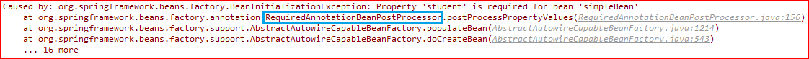
CommonAnnotationBeanPostProcessor 从其类图可以看出，此类主要是整合了MergedBeanDefinitionPostProcessor和DestructionAwareBeanPostProcessor的功能。其功能体现在以下几个方法，按调用顺序进行说明。
postProcessMergedBeanDefinition 此方法的执行入口以及调用时机上面已经说过了。其源码:
1 2 3 4 5 6 7 8 @Override public void postProcessMergedBeanDefinition (RootBeanDefinition beanDefinition, Class<?> beanType, String beanName) super .postProcessMergedBeanDefinition(beanDefinition, beanType, beanName); if (beanType != null ) { InjectionMetadata metadata = findResourceMetadata(beanName, beanType, null ); metadata.checkConfigMembers(beanDefinition); } }
父类 可以看出，首先调用了其父类InitDestroyAnnotationBeanPostProcessor的postProcessMergedBeanDefinition方法，源码:
1 2 3 4 5 6 7 @Override public void postProcessMergedBeanDefinition (RootBeanDefinition beanDefinition, Class<?> beanType, String beanName) if (beanType != null ) { LifecycleMetadata metadata = findLifecycleMetadata(beanType); metadata.checkConfigMembers(beanDefinition); } }
findLifecycleMetadata的套路和上面运行-AutowiredAnnotationBeanPostProcessor-源码一节中所说完全一样，所不同的是此处是遍历所有method寻找初始化和销毁方法标记 。这两个标记很有意思，Spring允许我们自定义是哪两个标记(getter/setter方法)。子类CommonAnnotationBeanPostProcessor在构造器中设置了其值:
1 2 3 4 public CommonAnnotationBeanPostProcessor () setInitAnnotationType(PostConstruct.class); setDestroyAnnotationType(PreDestroy.class); }
这两个标签来自于javax.annotation包。那么怎么自定义呢?
CommonAnnotationBeanPostProcessor本质上是一个BeanPostProcessor，所以我们可以自己注入，配置文件:
1 2 3 <bean class ="org.springframework.context.annotation.CommonAnnotationBeanPostProcessor" > <property name ="initAnnotationType" value ="annotation.Init" /> </bean >
Init是一个很简单的自定义注解:
1 2 3 @Retention (RetentionPolicy.RUNTIME)@Target (ElementType.METHOD)public @interface Init {}
在自己的bean中使用此注解:
1 2 3 4 @Init public void init () System.out.println("Init!" ); }
运行Spring便可以看到效果。
另外注意一点，从前面annotation-config-BeanPostProcessor注册一节的源码中可以看出，Spring在向容器中添加CommonAnnotationBeanPostProcessor时只是检测其ID(org.springframework.context.annotation.internalCommonAnnotationProcessor)是否存在，这就造成了一个问题: 如果按上面所说的配置，那么在容器中实际上有两个CommonAnnotationProcessor存在，也就是说，@PostConstruct和@PreDestroy注解此时依然被支持 。为了达到只有一个实例的目的，需要为前面的配置加上ID。
子类 findResourceMetadata的套路还是一样，就是在属性和方法上寻找@Resource标签。
postProcessPropertyValues 源码:
1 2 3 4 5 6 7 @Override public PropertyValues postProcessPropertyValues ( PropertyValues pvs, PropertyDescriptor[] pds, Object bean, String beanName) InjectionMetadata metadata = findResourceMetadata(beanName, bean.getClass(), pvs); metadata.inject(bean, beanName, pvs); return pvs; }
套路很明显了。
postProcessBeforeInitialization 实现在父类InitDestroyAnnotationBeanPostProcessor：
1 2 3 4 5 6 @Override public Object postProcessBeforeInitialization (Object bean, String beanName) LifecycleMetadata metadata = findLifecycleMetadata(bean.getClass()); metadata.invokeInitMethods(bean, beanName); return bean; }
invokeInitMethods:
1 2 3 4 5 6 7 8 9 10 public void invokeInitMethods (Object target, String beanName) throws Throwable Collection<LifecycleElement> initMethodsToIterate = (this .checkedInitMethods != null ? this .checkedInitMethods : this .initMethods); if (!initMethodsToIterate.isEmpty()) { for (LifecycleElement element : initMethodsToIterate) { element.invoke(target); } } }
不过从源码来看应该支持多个init方法。
postProcessBeforeDestruction 反射调用销毁方法，没啥说的了。
EventListenerMethodProcessor 就一个值得关注的方法: afterSingletonsInstantiated。
入口 DefaultListableBeanFactory.preInstantiateSingletons相关源码:
1 2 3 4 5 6 7 8 9 10 11 12 13 14 15 16 17 18 19 for (String beanName : beanNames) { Object singletonInstance = getSingleton(beanName); if (singletonInstance instanceof SmartInitializingSingleton) { final SmartInitializingSingleton smartSingleton = (SmartInitializingSingleton) singletonInstance; if (System.getSecurityManager() != null ) { AccessController.doPrivileged(new PrivilegedAction<Object>() { @Override public Object run () smartSingleton.afterSingletonsInstantiated(); return null ; } }, getAccessControlContext()); } else { smartSingleton.afterSingletonsInstantiated(); } } }
源码 略过。
component-scan ComponentScanBeanDefinitionParser.parse源码:
1 2 3 4 5 6 7 8 9 10 11 12 13 14 15 16 @Override public BeanDefinition parse (Element element, ParserContext parserContext) String basePackage = element.getAttribute(BASE_PACKAGE_ATTRIBUTE); basePackage = parserContext.getReaderContext().getEnvironment() .resolvePlaceholders(basePackage); String[] basePackages = StringUtils.tokenizeToStringArray(basePackage, ConfigurableApplicationContext.CONFIG_LOCATION_DELIMITERS); ClassPathBeanDefinitionScanner scanner = configureScanner(parserContext, element); Set<BeanDefinitionHolder> beanDefinitions = scanner.doScan(basePackages); registerComponents(parserContext.getReaderContext(), beanDefinitions, element); return null ; }
初始化 此部分负责初始化包扫描用到的扫描器，是一个ClassPathBeanDefinitionScanner对象，configureScanner方法源码:
1 2 3 4 5 6 7 8 9 10 11 12 13 14 15 16 17 18 19 20 21 22 23 24 25 protected ClassPathBeanDefinitionScanner configureScanner (ParserContext parserContext, Element element) boolean useDefaultFilters = true ; if (element.hasAttribute(USE_DEFAULT_FILTERS_ATTRIBUTE)) { useDefaultFilters = Boolean.valueOf(element.getAttribute(USE_DEFAULT_FILTERS_ATTRIBUTE)); } ClassPathBeanDefinitionScanner scanner = createScanner (parserContext.getReaderContext(), useDefaultFilters); scanner.setResourceLoader(parserContext.getReaderContext().getResourceLoader()); scanner.setEnvironment(parserContext.getReaderContext().getEnvironment()); scanner.setBeanDefinitionDefaults(parserContext.getDelegate().getBeanDefinitionDefaults()); scanner.setAutowireCandidatePatterns(parserContext.getDelegate().getAutowireCandidatePatterns()); if (element.hasAttribute(RESOURCE_PATTERN_ATTRIBUTE)) { scanner.setResourcePattern(element.getAttribute(RESOURCE_PATTERN_ATTRIBUTE)); } parseBeanNameGenerator(element, scanner); parseScope(element, scanner); parseTypeFilters(element, scanner, parserContext); return scanner; }
下面开始按顺序分部分说明。
use-default-filters component-scan注解会默认扫描喜闻乐见的@Component、@Repository、@Service和@Controller四大金刚。如果此属性设为false，那么就不会扫描这几个属性。
扫描器:创建 & 初始化 就是createScanner方法和下面那一坨setter方法，没啥好说的。
resource-pattern 用以配置扫描器扫描的路径，默认**/*.class。
name-generator 可以指定命名策略，这个在前面运行-ConfigurationClassPostProcessor-类解析一节中说过。Spring在parseBeanNameGenerator方法会直接使用反射的方法生成其对象。
scope-resolver 指定使用的ScopeMetadataResolver。此接口用于解析bean的scope定义，其类图:
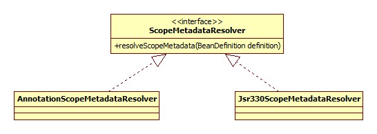
默认是AnnotationScopeMetadataResolver，也就是解析@Scope标签。
scoped-proxy 此配置的意思应该是是否为检测到的bean生成代理子类，共有三个选项: interfaces, no, targetClasses，默认no。原理应该就像对@Configuration类的处理，Spring自己说是实现proxy style，不知所云。
exclude-filter/include-filter 用法示例:
1 2 3 <context:component-scan base-package ="base" > <context:exclude-filter type ="annotation" expression ="javax.annotation.Resource" /> </context:component-scan >
parseTypeFilters方法负责此部分的解析，只贴部分源码:
1 2 3 4 5 6 7 if (INCLUDE_FILTER_ELEMENT.equals(localName)) { TypeFilter typeFilter = createTypeFilter((Element) node, classLoader, parserContext); scanner.addIncludeFilter(typeFilter); } else if (EXCLUDE_FILTER_ELEMENT.equals(localName)) { TypeFilter typeFilter = createTypeFilter((Element) node, classLoader, parserContext); scanner.addExcludeFilter(typeFilter); }
annotation-config 此属性等同于配置，默认就是true，也就是说，如果配置了context:component-scan其实就没有必要配置annotation-config 了。
扫描 入口方法便是ClassPathBeanDefinitionScanner.doScan:
1 2 3 4 5 6 7 8 9 10 11 12 13 14 15 16 17 18 19 20 21 22 23 24 25 26 27 28 29 protected Set<BeanDefinitionHolder> doScan (String... basePackages) Assert.notEmpty(basePackages, "At least one base package must be specified" ); Set<BeanDefinitionHolder> beanDefinitions = new LinkedHashSet<BeanDefinitionHolder>(); for (String basePackage : basePackages) { Set<BeanDefinition> candidates = findCandidateComponents(basePackage); for (BeanDefinition candidate : candidates) { ScopeMetadata scopeMetadata = this .scopeMetadataResolver.resolveScopeMetadata(candidate); candidate.setScope(scopeMetadata.getScopeName()); String beanName = this .beanNameGenerator.generateBeanName(candidate, this .registry); if (candidate instanceof AbstractBeanDefinition) { postProcessBeanDefinition((AbstractBeanDefinition) candidate, beanName); } if (candidate instanceof AnnotatedBeanDefinition) { AnnotationConfigUtils.processCommonDefinitionAnnotations ((AnnotatedBeanDefinition) candidate); } if (checkCandidate(beanName, candidate)) { BeanDefinitionHolder definitionHolder = new BeanDefinitionHolder(candidate, beanName); definitionHolder = AnnotationConfigUtils.applyScopedProxyMode (scopeMetadata, definitionHolder, this .registry); beanDefinitions.add(definitionHolder); registerBeanDefinition(definitionHolder, this .registry); } } } return beanDefinitions; }
逐包扫描/BeanDefinition解析 扫描其实就是在classpath下直接读取class文件。读取到的class文件被Spring用Resource接口表示。之后交由MetadataReader进行解析，其类图:
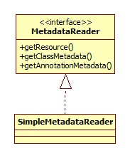
对class文件的读取、分析是通过ASM完成的，入口在SimpleMetadataReader的构造器:
1 2 3 4 5 6 7 8 9 10 11 12 13 SimpleMetadataReader(Resource resource, ClassLoader classLoader) throws IOException { InputStream is = new BufferedInputStream(resource.getInputStream()); ClassReader classReader; classReader = new ClassReader(is); AnnotationMetadataReadingVisitor visitor = new AnnotationMetadataReadingVisitor(classLoader); classReader.accept(visitor, ClassReader.SKIP_DEBUG); this .annotationMetadata = visitor; this .classMetadata = visitor; this .resource = resource; }
解析的关键便在于AnnotationMetadataReadingVisitor，其类图:
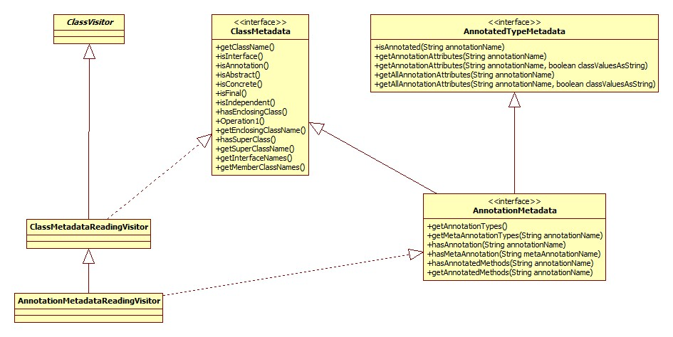
核心在于其visitAnnotation方法:
1 2 3 4 5 6 7 @Override public AnnotationVisitor visitAnnotation (final String desc, boolean visible) String className = Type.getType(desc).getClassName(); this .annotationSet.add(className); return new AnnotationAttributesReadingVisitor( className, this .attributesMap, this .metaAnnotationMap, this .classLoader); }
返回一个AnnotationVisitor表示对此注解的属性感兴趣，用于解析其属性。最终得到的BeanDefinition集合是ScannedGenericBeanDefinition类型，其类图:
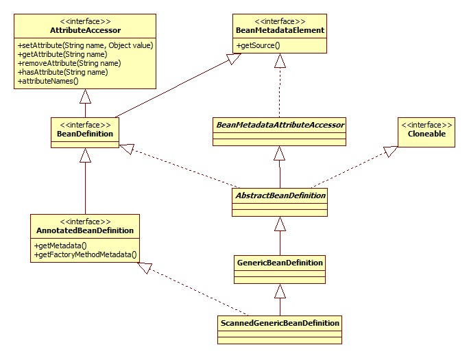
@Scope解析 AnnotationScopeMetadataResolver.resolveScopeMetadata:
1 2 3 4 5 6 7 8 9 10 11 12 13 14 15 16 17 18 19 20 @Override public ScopeMetadata resolveScopeMetadata (BeanDefinition definition) ScopeMetadata metadata = new ScopeMetadata(); if (definition instanceof AnnotatedBeanDefinition) { AnnotatedBeanDefinition annDef = (AnnotatedBeanDefinition) definition; AnnotationAttributes attributes = AnnotationConfigUtils.attributesFor( annDef.getMetadata(), this .scopeAnnotationType); if (attributes != null ) { metadata.setScopeName(attributes.getString("value" )); ScopedProxyMode proxyMode = attributes.getEnum("proxyMode" ); if (proxyMode == null || proxyMode == ScopedProxyMode.DEFAULT) { proxyMode = this .defaultProxyMode; } metadata.setScopedProxyMode(proxyMode); } } return metadata; }
proxyMode和xml的scoped-proxy属性是一个概念:
1 @Scope (value = "singleton" , proxyMode = ScopedProxyMode.DEFAULT)
XML的属性是全局的配置，这个是局部(针对单个bean)的配置 ，和XML属性相比对了一个default选项，这个就表示使用XML属性的配置。
bean名字生成 AnnotationBeanNameGenerator.generateBeanName:
1 2 3 4 5 6 7 8 9 10 11 12 @Override public String generateBeanName (BeanDefinition definition, BeanDefinitionRegistry registry) if (definition instanceof AnnotatedBeanDefinition) { String beanName = determineBeanNameFromAnnotation((AnnotatedBeanDefinition) definition); if (StringUtils.hasText(beanName)) { return beanName; } } return buildDefaultBeanName(definition, registry); }
根据注解 默认会首先尝试根据@Component、@Service、@Controller、@Repository、@ManagedBean、@Named的value属性生成，determineBeanNameFromAnnotation:
1 2 3 4 5 6 7 8 9 10 11 12 13 14 15 16 17 18 19 20 21 22 23 protected String determineBeanNameFromAnnotation (AnnotatedBeanDefinition annotatedDef) AnnotationMetadata amd = annotatedDef.getMetadata(); Set<String> types = amd.getAnnotationTypes(); String beanName = null ; for (String type : types) { AnnotationAttributes attributes = AnnotationConfigUtils.attributesFor(amd, type); if (isStereotypeWithNameValue(type, amd.getMetaAnnotationTypes(type), attributes)) { Object value = attributes.get("value" ); if (value instanceof String) { String strVal = (String) value; if (StringUtils.hasLength(strVal)) { if (beanName != null && !strVal.equals(beanName)) { throw new IllegalStateException(); } beanName = strVal; } } } } return beanName; }
isStereotypeWithNameValue方法用于判断此注解是否可以用来生成beanName，比如@Scope便不适合:
1 2 3 4 5 6 7 8 9 protected boolean isStereotypeWithNameValue (String annotationType, Set<String> metaAnnotationTypes, Map<String, Object> attributes) boolean isStereotype = annotationType.equals(COMPONENT_ANNOTATION_CLASSNAME) || (metaAnnotationTypes != null && metaAnnotationTypes.contains(COMPONENT_ANNOTATION_CLASSNAME)) || annotationType.equals("javax.annotation.ManagedBean" ) || annotationType.equals("javax.inject.Named" ); return (isStereotype && attributes != null && attributes.containsKey("value" )); }
metaAnnotationTypes用以判断元注解，针对这种情况:
1 2 @Component public @interface Controller {}
可以看出，判断是否可以用来生成名字的依据便是注解类型是否在上面提到的6种之列并且value属性不为空。
默认策略 如果上面提到的条件不满足，那么便会用默认策略生成beanName，buildDefaultBeanName：
1 2 3 4 5 6 protected String buildDefaultBeanName (BeanDefinition definition) String shortClassName = ClassUtils.getShortName(definition.getBeanClassName()); return Introspector.decapitalize(shortClassName); }
注意，对于内部类: OuterClassName.InnerClassName -> outerClassName.InnerClassName.
其它注解解析 入口在AnnotationConfigUtils.processCommonDefinitionAnnotations，其它指的是这几个:
1 2 3 4 5 6 @Lazy @Primary @DependsOn ("student" )@Role (BeanDefinition.ROLE_APPLICATION)@Description ("This is a simple bean." )public class SimpleBean
这里面就是@Role没见过，默认就是上面那个值，Spring说这是一个”hint”，可能没啥卵用，希望不要被打脸。解析之后设置到BeanDefinition，没啥好说的。
冲突检测 Spring会检测容器中是否已经存在同名的BeanDefinition。ClassPathBeanDefinitionScanner.checkCandidate:
1 2 3 4 5 6 7 8 9 10 11 12 13 14 15 protected boolean checkCandidate (String beanName, BeanDefinition beanDefinition) if (!this .registry.containsBeanDefinition(beanName)) { return true ; } BeanDefinition existingDef = this .registry.getBeanDefinition(beanName); BeanDefinition originatingDef = existingDef.getOriginatingBeanDefinition(); if (originatingDef != null ) { existingDef = originatingDef; } if (isCompatible(beanDefinition, existingDef)) { return false ; } throw new ConflictingBeanDefinitionException("冲突啦!" ); }
isCompatible用于判断和之前的BeanDefinition是否兼容:
1 2 3 4 5 6 7 8 protected boolean isCompatible (BeanDefinition newDefinition, BeanDefinition existingDefinition) return (!(existingDefinition instanceof ScannedGenericBeanDefinition) || newDefinition.getSource().equals(existingDefinition.getSource()) || newDefinition.equals(existingDefinition)); }
可以看出，如果已经存在的BeanDefinition不是扫描来的，如果是由同一个class文件解析来的，如果两者equals，Spring都认为是兼容的，即Spring会用新的替换之前的。
代理生成 入口: ClassPathBeanDefinitionScanner.doScan:
1 2 BeanDefinitionHolder definitionHolder = new BeanDefinitionHolder(candidate, beanName); definitionHolder = AnnotationConfigUtils.applyScopedProxyMode(scopeMetadata, definitionHolder, this .registry);
AnnotationConfigUtils.applyScopedProxyMode:
1 2 3 4 5 6 7 8 9 10 static BeanDefinitionHolder applyScopedProxyMode ( ScopeMetadata metadata, BeanDefinitionHolder definition, BeanDefinitionRegistry registry) ScopedProxyMode scopedProxyMode = metadata.getScopedProxyMode(); if (scopedProxyMode.equals(ScopedProxyMode.NO)) { return definition; } boolean proxyTargetClass = scopedProxyMode.equals(ScopedProxyMode.TARGET_CLASS); return ScopedProxyCreator.createScopedProxy(definition, registry, proxyTargetClass); }
最终调用的是ScopedProxyUtils.createScopedProxy，源码很多，这里说下重点:
这里所做的是生成了一个新的BeanDefinition对象，作为代理者，其属性拷贝自被代理者，代理者的beanClass为ScopedProxyFactoryBean，代理者的名字设置为被代理者的名字，而被代理者的名字改为scopedTarget.原名字，代理者内部有一个targetBeanName属性，就是被代理者的名字。
被代理者的autowireCandidate和primary属性被设为false，不能再当作其它bean的注入候选者。
将被代理者以scopedTarget.原名字注册到容器，返回代理者。
代理者和被代理者同时存在于容器中。
可以看出，这其实是一个偷天换日的过程。
做个实验:
1 2 3 4 5 6 7 8 public class Boostrap public static void main (String[] args) ClassPathXmlApplicationContext context = new ClassPathXmlApplicationContext("config.xml" ); SimpleBean bean = SimpleBean.class.cast(context.getBean(SimpleBean.class)); System.out.println(bean.getClass().getName()); context.close(); } }
SimpleBean已开启代理，输出的结果:
1 base.SimpleBean$$EnhancerBySpringCGLIB$$27256c61
那么问题来了，对于以class寻找的方式，必定会找到两个，那么怎么做出选择呢?
DefaultListableBeanFactory.getBean(Class requiredType, Object… args)部分源码:
1 2 3 4 5 6 7 8 9 10 11 12 13 14 String[] beanNames = getBeanNamesForType(requiredType); if (beanNames.length > 1 ) { ArrayList<String> autowireCandidates = new ArrayList<String>(); for (String beanName : beanNames) { if (!containsBeanDefinition(beanName) || getBeanDefinition(beanName).isAutowireCandidate()) { autowireCandidates.add(beanName); } } if (autowireCandidates.size() > 0 ) { beanNames = autowireCandidates.toArray(new String[autowireCandidates.size()]); } }
可以看出，是上面提到过的autowireCandidate设为了false的缘故导致了被代理者被pass。
BeanDefinition注册 你懂的。
Component注册 套路和annotation-config-逻辑关系整理一节完全一样，不再赘述。
property-override 作用 允许我们使用属性文件(.properties)的形式对bean的属性进行替换。下面是一个简单的demo:
定义如下的属性文件(property.properties):
格式为: bean名字.属性名字=值。由如下的bean:
1 2 3 4 <bean id ="student" class ="base.Student" > <property name ="name" value ="skywalker" /> <property name ="age" value ="30" /> </bean >
进行如下的配置:
1 <context:property-override location ="property.properties" />
运行如下的代码:
1 2 3 4 5 6 public static void main (String[] args) ClassPathXmlApplicationContext context = new ClassPathXmlApplicationContext("config.xml" ); SimpleBean bean = SimpleBean.class.cast(context.getBean(SimpleBean.class)); System.out.println(bean.getStudent().getName()); context.close(); }
打印的便是dog，而不是skywalker。
类图 具体的实现类是PropertyOverrideBeanDefinitionParser，其类图如下:
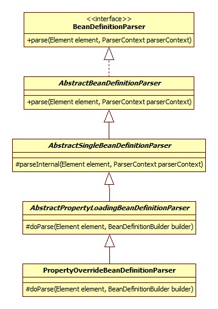
解析 解析的原理是将此配置相关的信息保存到BeanDefinition中，更准确的说是一个GenericBeanDefinition。解析的源码:
AbstractPropertyLoadingBeanDefinitionParser.doParse:
1 2 3 4 5 6 7 8 9 10 11 12 13 14 15 16 17 18 19 20 21 22 23 24 25 @Override protected void doParse (Element element, BeanDefinitionBuilder builder) String location = element.getAttribute("location" ); if (StringUtils.hasLength(location)) { String[] locations = StringUtils.commaDelimitedListToStringArray(location); builder.addPropertyValue("locations" , locations); } String propertiesRef = element.getAttribute("properties-ref" ); if (StringUtils.hasLength(propertiesRef)) { builder.addPropertyReference("properties" , propertiesRef); } String fileEncoding = element.getAttribute("file-encoding" ); if (StringUtils.hasLength(fileEncoding)) { builder.addPropertyValue("fileEncoding" , fileEncoding); } String order = element.getAttribute("order" ); if (StringUtils.hasLength(order)) { builder.addPropertyValue("order" , Integer.valueOf(order)); } builder.addPropertyValue("ignoreResourceNotFound" , Boolean.valueOf(element.getAttribute("ignore-resource-not-found" ))); builder.addPropertyValue("localOverride" , Boolean.valueOf(element.getAttribute("local-override" ))); builder.setRole(BeanDefinition.ROLE_INFRASTRUCTURE); }
properties-ref 此属性允许我们直接引用一个java.util.Properties类型的bean作为数据源，示例:
1 2 3 4 5 6 7 8 9 <context:property-override properties-ref ="property" /> <bean id ="property" class ="java.util.Properties" > <constructor-arg > <props > <prop key ="student.name" > cat</prop > </props > </constructor-arg > </bean >
这样便可以看到结果。
order 此属性用以指定其优先级，假设配置了多个context:property-override并且里面有相同的字段，那么将依赖order决定结果。
ignore-resource-not-found 如果设为true，那么对于没有找到的属性文件将会忽略，否则会抛出异常，默认为false，抛异常。
ignore-unresolvable 如果设为true，那么对于没有找到对应的key将会忽略，否则抛出异常，默认false。
local-override 这个属性让我很迷惑。Spring说是此选项决定”local”的属性是否可以覆盖属性文件中的值。正如下面说的，实际上属性文件被解析到了PropertyOverrideConfigurer对象，其父类PropertiesLoaderSupport有一个字段:
1 2 3 4 5 6 7 8 9 10 protected Properties[] localProperties;public void setProperties (Properties properties) this .localProperties = new Properties[] {properties}; }
可以看出，这应该就是Spring所说的”local”属性。好，我们来注入一下:
1 2 3 4 5 6 7 8 9 10 11 <context:property-override location ="property.properties" local-override ="false" /> <bean class ="org.springframework.beans.factory.config.PropertyOverrideConfigurer" > <property name ="properties" > <array > <props > <prop key ="student.name" > cat</prop > </props > </array > </property > </bean >
然而Spring在注册PropertyOverrideConfigurer的时候根本没有检查容器中是否已经有此类型的BeanDefinition存在，这就导致容器中会同时存在两个!在此种情况下local-override根本没什么卵用，因为后面的PropertyOverrideConfigurer始终会覆盖前一个，local-override是针对一个PropertyOverrideConfigurer来说的，那么问题来了，除此之外如何通过XML向”local”注入?(context:property-override不允许子标签存在)
BeanDefinition 保存的BeanDefinition的beanClass为PropertyOverrideConfigurer，其类图:
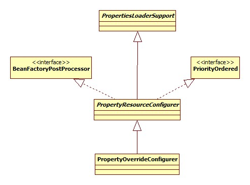
运行 入口当然是BeanFactoryPostProcessor.postProcessBeanFactory(PropertyResourceConfigurer):
1 2 3 4 5 6 7 8 9 10 11 12 13 14 15 16 @Override public void postProcessBeanFactory (ConfigurableListableBeanFactory beanFactory) try { Properties mergedProps = mergeProperties(); convertProperties(mergedProps); processProperties(beanFactory, mergedProps); } catch (IOException ex) { throw new BeanInitializationException("Could not load properties" , ex); } }
属性加载 PropertiesLoaderSupport.mergeProperties:
1 2 3 4 5 6 7 8 9 10 11 12 13 14 15 16 17 protected Properties mergeProperties () throws IOException Properties result = new Properties(); if (this .localOverride) { loadProperties(result); } if (this .localProperties != null ) { for (Properties localProp : this .localProperties) { CollectionUtils.mergePropertiesIntoMap(localProp, result); } } if (!this .localOverride) { loadProperties(result); } return result; }
可以看出，对local-override的支持是通过改变local和文件两者的加载顺序来实现的。
属性转换 convertProperties是个空实现，因为这里并不需要，在bean实际生成的时候才会转换。
属性设置 就是逐个属性调用PropertyOverrideConfigurer.applyPropertyValue:
1 2 3 4 5 6 7 8 9 10 11 protected void applyPropertyValue ( ConfigurableListableBeanFactory factory, String beanName, String property, String value) BeanDefinition bd = factory.getBeanDefinition(beanName); while (bd.getOriginatingBeanDefinition() != null ) { bd = bd.getOriginatingBeanDefinition(); } PropertyValue pv = new PropertyValue(property, value); pv.setOptional(this .ignoreInvalidKeys); bd.getPropertyValues().addPropertyValue(pv); }
addPropertyValue会遍历PropertyValue链表，找到name相同的进行value替换。
property-placeholder 这个怎么用已经喜闻乐见了
解析 解析的实现类是PropertyPlaceholderBeanDefinitionParser，此类的父类继承体系和property-override的PropertyOverrideBeanDefinitionParser完全一样，所以整体的处理套路也是基本一致。为什么会一致呢，查看此配置拥有的属性就会发现，和property-override很多都是一样的，所以这里只对不一样的而进行说明。
PropertyPlaceholderBeanDefinitionParser.doParse:
1 2 3 4 5 6 7 8 9 10 11 12 13 14 15 16 17 18 19 20 21 @Override protected void doParse (Element element, BeanDefinitionBuilder builder) super .doParse(element, builder); builder.addPropertyValue("ignoreUnresolvablePlaceholders" , Boolean.valueOf(element.getAttribute("ignore-unresolvable" ))); String systemPropertiesModeName = element.getAttribute(SYSTEM_PROPERTIES_MODE_ATTRIBUTE); if (StringUtils.hasLength(systemPropertiesModeName) && !systemPropertiesModeName.equals(SYSTEM_PROPERTIES_MODE_DEFAULT)) { builder.addPropertyValue("systemPropertiesModeName" , "SYSTEM_PROPERTIES_MODE_" + systemPropertiesModeName); } if (element.hasAttribute("value-separator" )) { builder.addPropertyValue("valueSeparator" , element.getAttribute("value-separator" )); } if (element.hasAttribute("trim-values" )) { builder.addPropertyValue("trimValues" , element.getAttribute("trim-values" )); } if (element.hasAttribute("null-value" )) { builder.addPropertyValue("nullValue" , element.getAttribute("null-value" )); } }
system-properties-mode Spring会将java的System.getProperties也当做属性的来源，此配置用于设置系统的和本地文件的同名属性的覆盖方式(谁覆盖谁)，自己看文档去。
value-separator 用于配置默认的值的分隔符:
1 2 3 <bean id ="student" class ="base.Student" > <property name ="name" value ="${student.name:skywalker}" /> </bean >
如果属性文件里没有student.name，那么就是skywalker。默认就是:。
null-value 遇到哪些值应该当做空处理，比如可以把空串””设为这个，默认不对任何值进行处理。
trim-values 是否移除开头和结尾的空格，按理说应该是布尔值，但是Spring没有提供可以选择的值，经过测试发现设为true或是false都会把空格干掉，不知道什么鬼。
BeanDefinition 这次是PropertySourcesPlaceholderConfigurer，其类图:
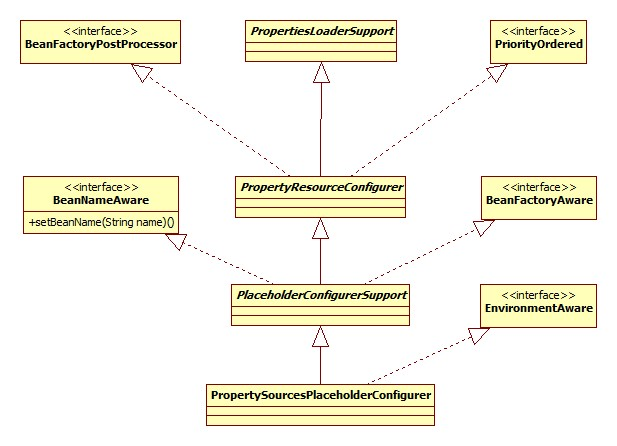
运行 PropertySourcesPlaceholderConfigurer.postProcessBeanFactory：
1 2 3 4 5 6 7 8 9 10 11 12 13 14 15 16 17 18 19 20 21 22 23 24 25 26 27 @Override public void postProcessBeanFactory (ConfigurableListableBeanFactory beanFactory) throws BeansException if (this .propertySources == null ) { this .propertySources = new MutablePropertySources(); if (this .environment != null ) { this .propertySources.addLast( new PropertySource<Environment>(ENVIRONMENT_PROPERTIES_PROPERTY_SOURCE_NAME, this .environment) { @Override public String getProperty (String key) return this .source.getProperty(key); } } ); } PropertySource<?> localPropertySource = new PropertiesPropertySource(LOCAL_PROPERTIES_PROPERTY_SOURCE_NAME, mergeProperties()); if (this .localOverride) { this .propertySources.addFirst(localPropertySource); } else { this .propertySources.addLast(localPropertySource); } } processProperties(beanFactory, new PropertySourcesPropertyResolver(this .propertySources)); this .appliedPropertySources = this .propertySources; }
从源码中可以看出，如果其内部的propertySources属性不为空(当然默认是空)，那么属性文件和系统属性都会被忽略。它的使用场景应该是这样:
不使用property-placeholder标签，以显式的bean定义代替。
处理 处理的过程就是遍历全部BeanDefinition，替换${}，不再详细进行详细说明。
这两个配置是紧密相关的，所以在一起说了。
load-time-weaver用以开启aspectj类加载期织入，实际上是利用jdk1.6提供的instrument API实现的，原理就是jvm会在类加载之前将class暴露给我们制定的类，允许我们在此时对类进行修改。aspectj便利用此机会根据我们的配置生成对应的满足需求的子类。
可以参考:
Spring之LoadTimeWeaver——一个需求引发的思考
Spring LoadTimeWeaver 的那些事儿
javaagent 要想使用此功能需要配置jvm参数javaagent指定代理类的jar包，示例:
-javaagent:D:\Software\maven-repos\org\springframework\spring-agent\2.5.6.SEC03\spring-agent-2.5.6.SEC03.jar
此jar包的META-INF/MANIFEST.MF文件需要配置如下一行:
Premain-Class: org.springframework.instrument.InstrumentationSavingAge
Spring的这个jar包只有这一个类，premain方法便是jvm调用的入口，方法参数是固定的。源码:
1 2 3 4 5 6 7 8 9 10 11 12 public class InstrumentationSavingAgent private static volatile Instrumentation instrumentation; public static void premain (String agentArgs, Instrumentation inst) instrumentation = inst; } public static Instrumentation getInstrumentation () return instrumentation; } }
所以，Spring在这里把Instrumentation给暴露了出来，供其它的类使用。
解析 解析的实现类是LoadTimeWeaverBeanDefinitionParser，其继承体系和property-override的PropertyOverrideBeanDefinitionParser类似。
LoadTimeWeaver 此接口用于向ClassLoader添加ClassFileTransformer对象，其继承体系:
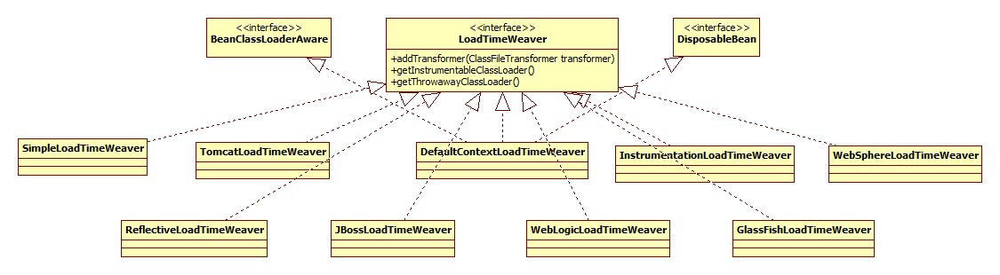
LoadTimeWeaverBeanDefinitionParser的父类初始化了一个DefaultContextLoadTimeWeaver类型的BeanDefinition放入容器，类型的决定位于LoadTimeWeaverBeanDefinitionParser.getBeanClassName:
1 2 3 4 5 6 7 8 9 @Override protected String getBeanClassName (Element element) if (element.hasAttribute(WEAVER_CLASS_ATTRIBUTE)) { return element.getAttribute(WEAVER_CLASS_ATTRIBUTE); } return DEFAULT_LOAD_TIME_WEAVER_CLASS_NAME; }
那么这个BeanDefinition的id/name又是什么呢?
LoadTimeWeaverBeanDefinitionParser.resolveId:
1 2 3 4 5 @Override protected String resolveId (Element element, AbstractBeanDefinition definition, ParserContext parserContext) return ConfigurableApplicationContext.LOAD_TIME_WEAVER_BEAN_NAME; }
DefaultContextLoadTimeWeaver其实是个包装类，包装了真正的LoadTimeWeaver，使用这层包装的目的就是可以根据外部环境(服务器代理或是Spring自己的代理)确定内部LoadTimeWeaver的实现，具体参见后面运行-BeanClassLoaderAware-setBeanClassLoadery一节。
LoadTimeWeaverBeanDefinitionParser LoadTimeWeaverBeanDefinitionParser.doParse:
1 2 3 4 5 6 7 8 9 10 11 12 13 14 @Override protected void doParse (Element element, ParserContext parserContext, BeanDefinitionBuilder builder) builder.setRole(BeanDefinition.ROLE_INFRASTRUCTURE); if (isAspectJWeavingEnabled(element.getAttribute(ASPECTJ_WEAVING_ATTRIBUTE), parserContext)) { if (!parserContext.getRegistry().containsBeanDefinition(ASPECTJ_WEAVING_ENABLER_BEAN_NAME)) { RootBeanDefinition def = new RootBeanDefinition(ASPECTJ_WEAVING_ENABLER_CLASS_NAME); parserContext.registerBeanComponent( new BeanComponentDefinition(def, ASPECTJ_WEAVING_ENABLER_BEAN_NAME)); } if (isBeanConfigurerAspectEnabled(parserContext.getReaderContext().getBeanClassLoader())) { new SpringConfiguredBeanDefinitionParser().parse(element, parserContext); } } }
aspectj-weaving 这里便是加载其织入的开关，共有三个选项: on, off, autodect。前两个自不必说，autodect表示自动去检测/META-INF下是否存在aop.xml，如果有，那么开启。
此功能依赖于spring-aspectj包，此jar包下有aop.xml，所以autodect也是开启的。
是否开启 isAspectJWeavingEnabled方法用于判断是否启用:
1 2 3 4 5 6 7 8 9 10 11 protected boolean isAspectJWeavingEnabled (String value, ParserContext parserContext) if ("on" .equals(value)) { return true ; } else if ("off" .equals(value)) { return false ; } else { ClassLoader cl = parserContext.getReaderContext().getResourceLoader().getClassLoader(); return (cl.getResource(AspectJWeavingEnabler.ASPECTJ_AOP_XML_RESOURCE) != null ); } }
AspectJWeavingEnabler 从源码中可以看出，Spring向容器放了一个这东西，名字叫org.springframework.context.config.internalAspectJWeavingEnabler。这东西用来向LoadTimeWeaver设置aspectj的ClassPreProcessorAgentAdapter对象。其类图:
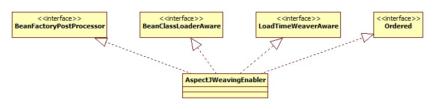
如果isBeanConfigurerAspectEnabled方法返回true，那么将会生成一个此对象并调用其parse方法，查看ContextNamespaceHandler的init方法源码可以发现，spring-configured对应的解析器其实就是它:
1 registerBeanDefinitionParser("spring-configured" , new SpringConfiguredBeanDefinitionParser());
其parse方法:
1 2 3 4 5 6 7 8 9 10 11 12 13 14 15 @Override public BeanDefinition parse (Element element, ParserContext parserContext) if (!parserContext.getRegistry().containsBeanDefinition(BEAN_CONFIGURER_ASPECT_BEAN_NAME)) { RootBeanDefinition def = new RootBeanDefinition(); def.setBeanClassName(BEAN_CONFIGURER_ASPECT_CLASS_NAME); def.setFactoryMethodName("aspectOf" ); def.setRole(BeanDefinition.ROLE_INFRASTRUCTURE); def.setSource(parserContext.extractSource(element)); parserContext.registerBeanComponent(new BeanComponentDefinition (def, BEAN_CONFIGURER_ASPECT_BEAN_NAME)); } return null ; }
很明显，把org.springframework.beans.factory.aspectj.AnnotationBeanConfigurerAspect添加到容器里了，这其实是一个切面，其类图:
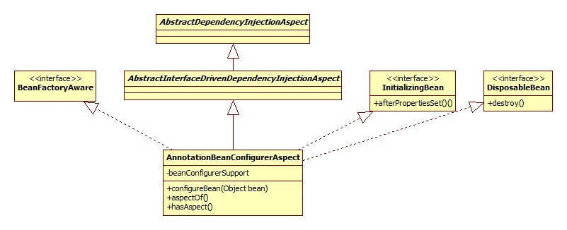
AnnotationBeanConfigurerAspect及其父类其实是由aspectj源文件(.aj)编译而来，所以在spring-aspectj的源码包中看到的是.aj文件而不是.java。
下面就去aj文件中看看到底定义了哪些pointcut以及advise。
语法可以参考:
Spring 之AOP AspectJ切入点详解
切点(pointcut) inConfigurableBean 在AnnotationBeanConfigurerAspect中定义，源码:
1 public pointcut inConfigurableBean () : @this (Configurable)
@this没找到相关说明，结合@以及this的语义，猜测是匹配带有@Configurable注解(以及作为元注解)的类 。
beanConstruction 源码:
1 2 public pointcut beanConstruction (Object bean) : initialization (ConfigurableObject+.new(..) ) && this (bean) ;
initialization表示匹配构造器的调用，ConfigurableObject+表示ConfigurableObject及其子类，这就说明可以用实现ConfigurableObject接口的方式代替@Configurable注解。this(bean)表示this必须满足this instanceof bean，也就是说被代理的对象必须是bean的子类。
preConstructionCondition 1 2 private pointcut preConstructionCondition () : leastSpecificSuperTypeConstruction () && preConstructionConfiguration () ;
由两个pointcut与运算而来。
leastSpecificSuperTypeConstruction 1 public pointcut leastSpecificSuperTypeConstruction () : initialization (ConfigurableObject.new(..) )
preConstructionConfiguration 1 2 public pointcut preConstructionConfiguration () : preConstructionConfigurationSupport (*) private pointcut preConstructionConfigurationSupport (Configurable c) : @this (c) && if (c.preConstruction() )
preConstruction表示@Configurable注解的preConstruction属性，此属性表示是否注入操作可以发生在构造之前，默认false。
postConstructionCondition 1 2 private pointcut postConstructionCondition () : mostSpecificSubTypeConstruction () && !preConstructionConfiguration () ;
mostSpecificSubTypeConstruction:
1 2 public pointcut mostSpecificSubTypeConstruction () : if (thisJoinPoint.getSignature() .getDeclaringType () == thisJoinPoint.getThis().getClass());
advise可以声明JoinPoint类型的方法参数，thisJoinpoint指的就是这个。此pointcut的目的是匹配接口/抽象类的最具体的实现。
advise 前置 1 2 3 4 before(Object bean) : beanConstruction(bean) && preConstructionCondition() && inConfigurableBean() { configureBean(bean); }
运行 AspectJWeavingEnabler.postProcessBeanFactory:
1 2 3 4 @Override public void postProcessBeanFactory (ConfigurableListableBeanFactory beanFactory) throws BeansException enableAspectJWeaving(this .loadTimeWeaver, this .beanClassLoader); }
enableAspectJWeaving:
1 2 3 4 5 6 7 8 9 10 11 12 13 public static void enableAspectJWeaving (LoadTimeWeaver weaverToUse, ClassLoader beanClassLoader) if (weaverToUse == null ) { if (InstrumentationLoadTimeWeaver.isInstrumentationAvailable()) { weaverToUse = new InstrumentationLoadTimeWeaver(beanClassLoader); } else { throw new IllegalStateException("No LoadTimeWeaver available" ); } } weaverToUse.addTransformer( new AspectJClassBypassingClassFileTransformer(new ClassPreProcessorAgentAdapter())); }
LoadTimeWeaverAware AspectJWeavingEnabler实现了LoadTimeWeaverAware接口，那么何时由谁进行注入的呢?
当Context初始化时，AbstractApplicationContext.prepareBeanFactory部分源码:
1 2 3 4 5 6 if (beanFactory.containsBean(LOAD_TIME_WEAVER_BEAN_NAME)) { beanFactory.addBeanPostProcessor(new LoadTimeWeaverAwareProcessor(beanFactory)); beanFactory.setTempClassLoader(new ContextTypeMatchClassLoader(beanFactory.getBeanClassLoader())); }
很明显，关键在于LoadTimeWeaverAwareProcessor，类图:
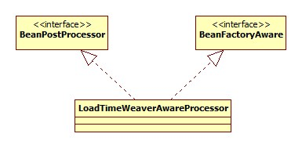
postProcessBeforeInitialization方法:
1 2 3 4 5 6 7 8 9 10 11 12 13 14 15 @Override public Object postProcessBeforeInitialization (Object bean, String beanName) if (bean instanceof LoadTimeWeaverAware) { LoadTimeWeaver ltw = this .loadTimeWeaver; if (ltw == null ) { Assert.state(this .beanFactory != null , "BeanFactory required if no LoadTimeWeaver explicitly specified" ); ltw = this .beanFactory.getBean( ConfigurableApplicationContext.LOAD_TIME_WEAVER_BEAN_NAME, LoadTimeWeaver.class); } ((LoadTimeWeaverAware) bean).setLoadTimeWeaver(ltw); } return bean; }
可以看出，如果本地的loadTimeWeaver为空，那么会去容器找，调用了getBean方法，也就是说DefaultContextLoadTimeWeaver就是在这里初始化的。
BeanFactoryPostProcessor也是一个bean，所以它的初始化也会BeanPostProcessor的处理。不过注意一点:
BeanPostProcessor的注册是在BeanFactoryPostProcessor的调用之后进行的:
AbstractApplicationContext.refresh:
1 2 3 4 invokeBeanFactoryPostProcessors(beanFactory); registerBeanPostProcessors(beanFactory);
那么BeanFactoryPostProcessor初始化的时候执行处理的BeanPostProcessor是哪里来的?
AbstractAutowireCapableBeanFactory.applyBeanPostProcessorsBeforeInitialization源码:
1 2 3 4 5 6 7 8 9 10 11 @Override public Object applyBeanPostProcessorsBeforeInitialization (Object existingBean, String beanName) Object result = existingBean; for (BeanPostProcessor beanProcessor : getBeanPostProcessors()) { result = beanProcessor.postProcessBeforeInitialization(result, beanName); if (result == null ) { return result; } } return result; }
getBeanPostProcessors:
1 2 3 public List<BeanPostProcessor> getBeanPostProcessors () return this .beanPostProcessors; }
可以看出，并没有查找容器的过程，所以此处并不会导致BeanPostProcessor的初始化。问题的关键就在于LoadTimeWeaverAwareProcessor的添加方式:
1 beanFactory.addBeanPostProcessor(new LoadTimeWeaverAwareProcessor(beanFactory));
直接将实例添加到BeanFactory中，所以可以得出结论:
我们自定义的BeanPostProcessor不会对BeanFactoryPostProcessor的初始化造成影响，除非使用调用BeanFactory.addBeanPostProcessor的方式进行添加 。
BeanClassLoaderAware 入口 DefaultContextLoadTimeWeaver同样实现了此接口，那么哪里调用的呢?
AbstractAutowireCapableBeanFactory.initializeBean调用了invokeAwareMethods方法，源码:
1 2 3 4 5 6 7 8 9 10 11 12 13 private void invokeAwareMethods (final String beanName, final Object bean) if (bean instanceof Aware) { if (bean instanceof BeanNameAware) { ((BeanNameAware) bean).setBeanName(beanName); } if (bean instanceof BeanClassLoaderAware) { ((BeanClassLoaderAware) bean).setBeanClassLoader(getBeanClassLoader()); } if (bean instanceof BeanFactoryAware) { ((BeanFactoryAware) bean).setBeanFactory(AbstractAutowireCapableBeanFactory.this ); } } }
setBeanClassLoader 这个方法很关键，对instrument的获取就是在这里。源码:
1 2 3 4 5 6 7 8 9 10 11 @Override public void setBeanClassLoader (ClassLoader classLoader) LoadTimeWeaver serverSpecificLoadTimeWeaver = createServerSpecificLoadTimeWeaver(classLoader); if (serverSpecificLoadTimeWeaver != null ) { this .loadTimeWeaver = serverSpecificLoadTimeWeaver; } else if (InstrumentationLoadTimeWeaver.isInstrumentationAvailable()) { this .loadTimeWeaver = new InstrumentationLoadTimeWeaver(classLoader); } else { this .loadTimeWeaver = new ReflectiveLoadTimeWeaver(classLoader); } }
很明显分为三部分。
服务器agent Spring首先会去检测是否存在服务器的agent代理。按照Spring doc里说的，支持下列服务器:
1 2 > Oracle WebLogic 10,GlassFish 3, Tomcat 6, 7 and 8, JBoss AS 5, 6 and 7, IBM WebSphere 7 and 8. >
createServerSpecificLoadTimeWeaver源码:
1 2 3 4 5 6 7 8 9 10 11 12 13 14 15 protected LoadTimeWeaver createServerSpecificLoadTimeWeaver (ClassLoader classLoader) String name = classLoader.getClass().getName(); if (name.startsWith("weblogic" )) { return new WebLogicLoadTimeWeaver(classLoader); } else if (name.startsWith("org.glassfish" )) { return new GlassFishLoadTimeWeaver(classLoader); } else if (name.startsWith("org.apache.catalina" )) { return new TomcatLoadTimeWeaver(classLoader); } else if (name.startsWith("org.jboss" )) { return new JBossLoadTimeWeaver(classLoader); } else if (name.startsWith("com.ibm" )) { return new WebSphereLoadTimeWeaver(classLoader); } return null ; }
可以看出，对于服务器的判断是通过检测当前的类加载器来实现的，因为这些服务器都使用了自己的类加载器实现 。
这也从侧面说明，如果当前处于以上服务器所在的web应用环境，不需要spring-agent.jar便可以实现LTW(载入期织入)。
Spring agent 这个也是测试时使用的。InstrumentationLoadTimeWeaver.isInstrumentationAvailable：
1 2 3 4 5 6 7 8 9 10 11 public static boolean isInstrumentationAvailable () return (getInstrumentation() != null ); } private static Instrumentation getInstrumentation () if (AGENT_CLASS_PRESENT) { return InstrumentationAccessor.getInstrumentation(); } else { return null ; } }
AGENT_CLASS_PRESENT是一个布尔变量，就是判断org.springframework.instrument.InstrumentationSavingAgent是否存在，这个便是spring-agent.jar中唯一的类。
InstrumentationAccessor是InstrumentationLoadTimeWeaver的内部类:
1 2 3 4 5 private static class InstrumentationAccessor public static Instrumentation getInstrumentation () return InstrumentationSavingAgent.getInstrumentation(); } }
这里便是获取spring-agent.jar暴露的Instrumentation对象的地方了。
反射 在这种情况中，Spring寄托于当前的ClassLoader实现了LoadTimeWeaver的功能，也就是必须有addTransformer方法，如果有，Spring便会把LoadTimeWeaver的职责委托给ClassLoader，如果没有只能抛异常了(抱歉，我们没法支持LTW…)，检测的源码位于ReflectiveLoadTimeWeaver的构造器:
1 2 3 4 5 6 7 8 9 10 11 12 13 public ReflectiveLoadTimeWeaver () this (ClassUtils.getDefaultClassLoader()); } public ReflectiveLoadTimeWeaver (ClassLoader classLoader) Assert.notNull(classLoader, "ClassLoader must not be null" ); this .classLoader = classLoader; this .addTransformerMethod = ClassUtils.getMethodIfAvailable( this .classLoader.getClass(), ADD_TRANSFORMER_METHOD_NAME, ClassFileTransformer.class); if (this .addTransformerMethod == null ) { throw new IllegalStateException(); } }
总结 其实可以不用Spring，只使用aspectj自己便可以实现LTW，只需要把代理jar包设为aspect-weaver.jar，并自己编写aop.xml文件以及相应的aspect类即可。可以参考官方文档:
Chapter 5. Load-Time Weaving
从enableAspectJWeaving方法的源码可以看出，实际上就是向DefaultContextLoadTimeWeaver添加了一个AspectJClassBypassingClassFileTransformer对象。根据java instrument API的定义，每当一个Class被加载的时候都会去调用挂在Instrumentation上的ClassFileTransformer的transform方法。所以LTW的核心便在这里了。
AspectJClassBypassingClassFileTransformer.transform:
1 2 3 4 5 6 7 8 9 10 @Override public byte [] transform(ClassLoader loader, String className, Class<?> classBeingRedefined, ProtectionDomain protectionDomain, byte [] classfileBuffer) { if (className.startsWith("org.aspectj" ) || className.startsWith("org/aspectj" )) { return classfileBuffer; } return this .delegate.transform(loader, className, classBeingRedefined, protectionDomain, classfileBuffer); }
delegate是一个org.aspectj.weaver.loadtime.ClassPreProcessorAgentAdapter对象。这是一个适配器模式，其类图:
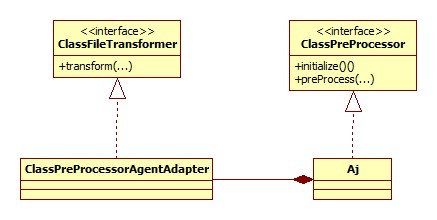
根据Aspectj的doc，ClassPreProcessor用于将Aspectj 5对于jdk5依赖代码抽取出来以便可以支持jdk1.3/1.4.
Aj Aj的preProcess方法很长，其实只干了两件事，都是围绕着WeavingAdaptor进行的。对类的处理也转交给WeavingAdaptor的weaveClass方法。
缓存 Aj使用了WeavingAdaptor缓存机制，确保一个ClassLoader只有一个WeavingAdaptor对象，因为其初始化的成本很高，缓存利用一个key为AdaptorKey(包装了ClassLoader), value为WeavingAdaptor的HashMap来实现。
WeavingAdaptor初始化 初始化就是ClassLoaderWeavingAdaptor.initialize方法，初始化分部分来进行说明。Aspectj部分不再详细展开，只对关键的部分进行说明。
aop.xml 解析 aop.xml的解析便是在这里进行。解析的过程无非是xml的解析，下面是其结果如何存储的:
以org.aspectj.weaver.loadtime.definition.Definition为载体，我们以spring-aspects.jar下的aop.xml为例:
1 2 3 4 5 6 7 8 9 10 <aspectj > <aspects > <aspect name ="org.springframework.beans.factory.aspectj.AnnotationBeanConfigurerAspect" /> <aspect name ="org.springframework.scheduling.aspectj.AnnotationAsyncExecutionAspect" /> <aspect name ="org.springframework.transaction.aspectj.AnnotationTransactionAspect" /> <aspect name ="org.springframework.transaction.aspectj.JtaAnnotationTransactionAspect" /> <aspect name ="org.springframework.cache.aspectj.AnnotationCacheAspect" /> <aspect name ="org.springframework.cache.aspectj.JCacheCacheAspect" /> </aspects > </aspectj >
那么解析后的结果:
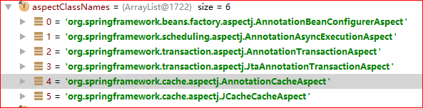
注册 入口方法在ClassLoaderWeavingAdaptor.registerDefinitions:
1 2 3 4 5 6 7 8 9 10 11 12 13 14 private boolean registerDefinitions (final BcelWeaver weaver, final ClassLoader loader, List<Definition> definitions) registerOptions(weaver, loader, definitions); registerAspectExclude(weaver, loader, definitions); registerAspectInclude(weaver, loader, definitions); success = registerAspects(weaver, loader, definitions); registerIncludeExclude(weaver, loader, definitions); registerDump(weaver, loader, definitions); }
总结 Spring将切面以编译过的Aspectj语言形式定义，不过也可以用原生java类。spring-aspectj包定义的是供各个模块进行LTW的切面。Aspectj部分不再继续向下深入探究。
申明 本文转载自seaswalker的github ，转载授权 ，由我在万达摆地摊 整理发布。